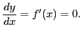

Tests for determining when a function is increasing or decreasing
It is evident from Figure 8.7 that at a point where a function
is increasing, the tangent in general makes an acute angle with the
 -axis; hence
-axis; hence
slope
a positive number.
Similarly, at a point where a function is decreasing, the
tangent in general makes an obtuse angle with the -axis;
therefore8.3
slope
a negative number.
In order, then, that the function shall change from an increasing
to a decreasing function, or vice versa, it is a necessary and
sufficient condition that the first derivative shall change
sign. But this can only happen for a continuous derivative by
passing through the value zero. Thus in Figure 8.7
as we pass along the curve the derivative (= slope) changes sign
at the points where  and
and  . In general, then, we
have at ``turning points,''
. In general, then, we
have at ``turning points,''

A value of  satisfying this condition is called a
critical point of the function
satisfying this condition is called a
critical point of the function  .
The derivative is continuous in nearly all our important
applications, but it is interesting to note the case when the derivative
(= slope) changes sign by passing through8.4
.
The derivative is continuous in nearly all our important
applications, but it is interesting to note the case when the derivative
(= slope) changes sign by passing through8.4  .
This would evidently happen at the points one a curve where the
tangents (and curve) are perpendicular to the -axis. At such
exceptional critical points
.
This would evidently happen at the points one a curve where the
tangents (and curve) are perpendicular to the -axis. At such
exceptional critical points
or, what amounts to the same thing,
david joyner
2008-08-11